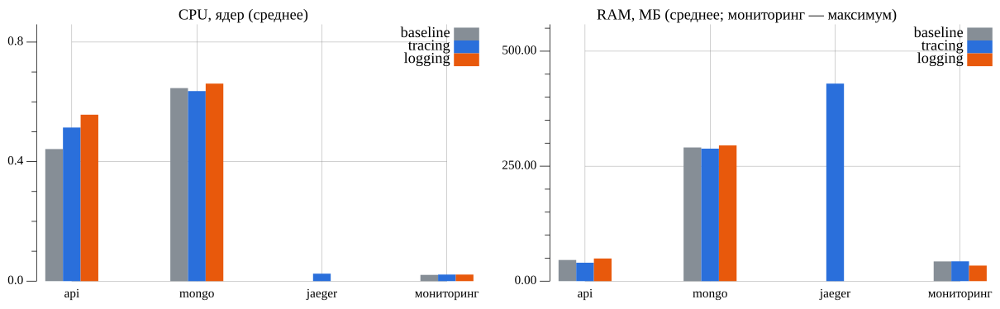
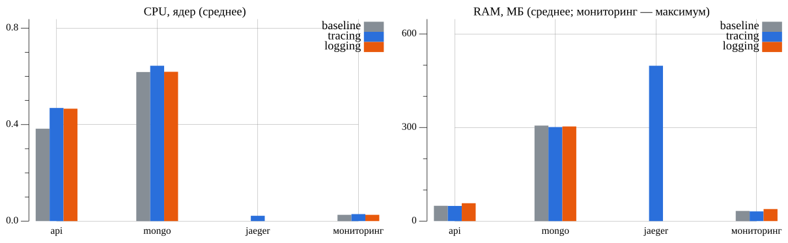

Трассировка и логирование: сравнение ресурсов
Варианты конфигурации
| Вариант | Описание | Настройки API | Профили стенда | Прогоны |
|---|---|---|---|---|
| baseline | Без трассировки, логирование по умолчанию | VITALINE_LOG_EXTENDED=false VITALINE_TRACING_ENABLED=false | — | baseline/ |
| tracing | Трассировка OpenTelemetry → Jaeger | VITALINE_LOG_EXTENDED=false VITALINE_TRACING_ENABLED=true | tracing | tracing/ |
| logging | Расширенное логирование: debug, тела запросов, команды MongoDB | VITALINE_LOG_EXTENDED=true VITALINE_TRACING_ENABLED=false | — | logging/ |
Ступенчатое увеличение нагрузки
| Вариант | RPS | p50 мс | p95 мс | p99 мс | Отказы | CPU api ср. | CPU api max | RAM api ср., МБ | RAM api max | Запись api, КБ/с | CPU mongo | CPU jaeger | RAM jaeger max | CPU мониторинга | RAM мониторинга max | Итог |
|---|---|---|---|---|---|---|---|---|---|---|---|---|---|---|---|---|
| baseline | 749 | 2.48 | 176 | 388 | 0.00% | 0.44 | 1.04 | 46.0 | 128 | 109 | 0.65 | — | — | 0.02 | 42.9 | SLO выполнено на всех ступенях, до 1500 VU / 681 RPS |
| tracing | 752 | 2.58 | 155 | 320 | 0.00% | 0.51 +16% | 1.25 | 40.1 -13% | 111 | 140 +29% | 0.64 | 0.03 | 687 | 0.02 | 43.1 | SLO выполнено на всех ступенях, до 1500 VU / 682 RPS |
| logging | 728 | 4.92 | 273 | 598 | 0.10% | 0.56 +26% | 1.32 | 49.3 +7% | 130 | 1777 +1537% | 0.66 | — | — | 0.02 | 33.8 | SLO выполнено на всех ступенях, до 1500 VU / 671 RPS |

Перегрузка и восстановление
| Вариант | RPS | p50 мс | p95 мс | p99 мс | Отказы | CPU api ср. | CPU api max | RAM api ср., МБ | RAM api max | Запись api, КБ/с | CPU mongo | CPU jaeger | RAM jaeger max | CPU мониторинга | RAM мониторинга max | Итог |
|---|---|---|---|---|---|---|---|---|---|---|---|---|---|---|---|---|
| baseline | 465 | 3.17 | 270 | 589 | 0.00% | 0.38 | 1.12 | 49.0 | 92.7 | 67.0 | 0.62 | — | — | 0.03 | 32.5 | восстановление за 0 с |
| tracing | 434 | 9.80 | 501 | 913 | 0.00% | 0.47 +22% | 1.33 | 48.6 -1% | 91.8 | 82.3 +23% | 0.64 | 0.02 | 683 | 0.03 | 31.1 | восстановление за 55 с |
| logging | 442 | 7.60 | 457 | 1031 | 0.40% | 0.47 +22% | 1.38 | 57.3 +17% | 108 | 1077 +1508% | 0.62 | — | — | 0.03 | 38.6 | восстановление за 0 с |

Фиксированная нагрузка
| Вариант | RPS | p50 мс | p95 мс | p99 мс | Отказы | CPU api ср. | CPU api max | RAM api ср., МБ | RAM api max | Запись api, КБ/с | CPU mongo | CPU jaeger | RAM jaeger max | CPU мониторинга | RAM мониторинга max | Итог |
|---|---|---|---|---|---|---|---|---|---|---|---|---|---|---|---|---|
| baseline | 382 | 1.58 | 22.2 | 50.2 | 0.00% | 0.33 | 0.63 | 25.9 | 30.7 | 58.4 | 0.55 | — | — | 0.02 | 35.9 | 173990 запросов |
| tracing | 383 | 1.72 | 23.4 | 51.3 | 0.00% | 0.40 +20% | 0.93 | 23.3 -10% | 28.1 | 74.9 +28% | 0.56 | 0.02 | 658 | 0.02 | 35.3 | 174014 запросов |
| logging | 382 | 1.89 | 20.3 | 41.2 | 0.00% | 0.41 +23% | 0.58 | 30.3 +17% | 36.4 | 959 +1544% | 0.55 | — | — | 0.02 | 34.5 | 173938 запросов |

Стоимость трассировки и логирования внутри процесса
| Вариант | Время, мкс/оп | ±σ | Δ | Память, КБ/оп | Δ | Аллокаций/оп | Δ |
|---|---|---|---|---|---|---|---|
| baseline | 118 | 28.4 | 33.4 | 201 | |||
| tracing | 205 | 8.11 | +74% | 60.7 | +82% | 390 | +94% |
| logging | 146 | 2.29 | +24% | 41.2 | +23% | 290 | +44% |
| tracing+logging | 257 | 6.97 | +118% | 68.6 | +106% | 480 | +139% |
Трейсы
ramp · traces/jaeger.json
| Операция | Спанов | Среднее, мс | p95, мс |
|---|---|---|---|
| visits.find | 649 | 15.5 | 56.5 |
| appointments.find | 573 | 19.9 | 57.8 |
| appointments.update | 214 | 17.7 | 62.4 |
| GET /api/appointments | 207 | 22.9 | 62.0 |
| appointments.aggregate | 163 | 20.1 | 62.5 |
| POST /api/appointments | 163 | 39.3 | 92.8 |
| appointments.insert | 163 | 13.1 | 48.4 |
| GET /api/visits | 152 | 79.9 | 166 |
| POST /api/visits | 150 | 54.5 | 118 |
| visits.insert | 150 | 11.9 | 36.2 |
| visits.update | 136 | 12.6 | 49.1 |
| POST /api/visits/{id}/complete | 136 | 36.0 | 85.3 |
| GET /api/schedule/free | 96 | 28.2 | 68.8 |
| schedule_slots.find | 96 | 20.4 | 55.6 |
| POST /api/appointments/{id}/cancel | 64 | 47.0 | 83.5 |
| patients.find | 29 | 24.3 | 70.2 |
| GET /api/patients/{id} | 29 | 31.5 | 72.9 |
| GET /health | 3 | 7.65 | 21.1 |
| ping | 3 | 7.25 | 20.9 |
stress · traces/jaeger.json
| Операция | Спанов | Среднее, мс | p95, мс |
|---|---|---|---|
| visits.find | 619 | 0.85 | 1.95 |
| appointments.find | 457 | 1.53 | 5.38 |
| GET /api/appointments | 157 | 1.75 | 6.05 |
| appointments.update | 152 | 0.84 | 2.58 |
| appointments.insert | 151 | 0.96 | 3.37 |
| POST /api/appointments | 151 | 3.54 | 18.7 |
| appointments.aggregate | 151 | 2.19 | 11.6 |
| GET /api/visits | 148 | 4.60 | 11.6 |
| GET /api/schedule/free | 137 | 1.95 | 7.55 |
| schedule_slots.find | 137 | 1.65 | 7.31 |
| GET /api/patients/{id} | 111 | 2.79 | 17.1 |
| patients.find | 111 | 2.38 | 15.5 |
| visits.update | 108 | 1.15 | 2.33 |
| POST /api/visits/{id}/complete | 108 | 2.95 | 18.2 |
| POST /api/visits | 107 | 3.98 | 21.4 |
| visits.insert | 107 | 0.58 | 1.56 |
| POST /api/appointments/{id}/cancel | 45 | 1.53 | 4.90 |
| patients.insert | 32 | 2.45 | 19.9 |
| POST /api/patients | 32 | 2.78 | 20.2 |
| ping | 4 | 0.40 | 0.57 |
| GET /health | 4 | 0.60 | 0.79 |
stable · traces/jaeger.json
| Операция | Спанов | Среднее, мс | p95, мс |
|---|---|---|---|
| visits.find | 579 | 0.73 | 1.93 |
| appointments.find | 454 | 1.50 | 5.05 |
| GET /api/appointments | 156 | 1.65 | 4.33 |
| appointments.aggregate | 152 | 1.38 | 2.81 |
| appointments.insert | 152 | 0.67 | 2.39 |
| POST /api/appointments | 152 | 2.40 | 9.07 |
| appointments.update | 150 | 1.20 | 2.33 |
| GET /api/visits | 148 | 4.24 | 15.1 |
| schedule_slots.find | 139 | 1.71 | 10.4 |
| GET /api/schedule/free | 139 | 1.98 | 10.6 |
| visits.update | 115 | 0.53 | 1.38 |
| POST /api/visits/{id}/complete | 115 | 1.72 | 3.42 |
| POST /api/visits | 114 | 3.06 | 7.78 |
| visits.insert | 114 | 0.67 | 2.12 |
| patients.find | 112 | 2.19 | 16.3 |
| GET /api/patients/{id} | 112 | 2.43 | 16.4 |
| POST /api/appointments/{id}/cancel | 36 | 5.70 | 24.2 |
| POST /api/patients | 25 | 4.16 | 18.7 |
| patients.insert | 25 | 3.69 | 18.5 |
| ping | 3 | 0.37 | 0.45 |
| GET /health | 3 | 0.61 | 0.77 |